基于数据分析的借贷用户分类预测
1 - 数据描述+统计
import pandas as pd
import numpy as np
import os
import seaborn as sns
import matplotlib.pyplot as plt
os.chdir(r"d:/Data/pymen")
col = ['Existing checking accout','Duration in month','Credit history','Purpurse','Credit amount',
'Savings account','Present employment','Installment rate','Status and sex','Other debtors',
'Present residence','Property','Age','Installmentplans','Housing state',
'Existing credits number','Job','Maintenance number','Telephone','Foreign worker','target']
datas = pd.read_csv('german.data',header=None,sep=' ')
datas.columns = col
# datas.head()
datas['Existing checking accout'].describe()
cc = datas['Existing checking accout'].value_counts()
xx = datas['Existing checking accout'].unique()
# datas.isnull().sum()
plt.figure(figsize=(5,5))
# plt.plot(xx, cc, 'b')
plt.bar(xx,cc,color = 'steelblue', alpha = 0.8, width = 0.7)
plt.xlabel("type") #设置X轴的文字
plt.ylabel("count")
plt.ylim(0, 1000) #设置Y轴的范围
plt.title('Existing checking accout') #设置图表的标题
plt.show() #显示图示<Figure size 500x500 with 1 Axes>datas.info()
datas.describe()<class 'pandas.core.frame.DataFrame'>
RangeIndex: 1000 entries, 0 to 999
Data columns (total 21 columns):
Existing checking accout 1000 non-null object
Duration in month 1000 non-null int64
Credit history 1000 non-null object
Purpurse 1000 non-null object
Credit amount 1000 non-null int64
Savings account 1000 non-null object
Present employment 1000 non-null object
Installment rate 1000 non-null int64
Status and sex 1000 non-null object
Other debtors 1000 non-null object
Present residence 1000 non-null int64
Property 1000 non-null object
Age 1000 non-null int64
Installmentplans 1000 non-null object
Housing state 1000 non-null object
Existing credits number 1000 non-null int64
Job 1000 non-null object
Maintenance number 1000 non-null int64
Telephone 1000 non-null object
Foreign worker 1000 non-null object
target 1000 non-null int64
dtypes: int64(8), object(13)
memory usage: 164.1+ KB| Duration in month | Credit amount | Installment rate | Present residence | Age | Existing credits number | Maintenance number | target | |
|---|---|---|---|---|---|---|---|---|
| count | 1000.000000 | 1000.000000 | 1000.000000 | 1000.000000 | 1000.000000 | 1000.000000 | 1000.000000 | 1000.000000 |
| mean | 20.903000 | 3271.258000 | 2.973000 | 2.845000 | 35.546000 | 1.407000 | 1.155000 | 1.300000 |
| std | 12.058814 | 2822.736876 | 1.118715 | 1.103718 | 11.375469 | 0.577654 | 0.362086 | 0.458487 |
| min | 4.000000 | 250.000000 | 1.000000 | 1.000000 | 19.000000 | 1.000000 | 1.000000 | 1.000000 |
| 25% | 12.000000 | 1365.500000 | 2.000000 | 2.000000 | 27.000000 | 1.000000 | 1.000000 | 1.000000 |
| 50% | 18.000000 | 2319.500000 | 3.000000 | 3.000000 | 33.000000 | 1.000000 | 1.000000 | 1.000000 |
| 75% | 24.000000 | 3972.250000 | 4.000000 | 4.000000 | 42.000000 | 2.000000 | 1.000000 | 2.000000 |
| max | 72.000000 | 18424.000000 | 4.000000 | 4.000000 | 75.000000 | 4.000000 | 2.000000 | 2.000000 |
numeric_features = ['Duration in month',
'Credit amount',
'Installment rate',
'Present residence','Age',
'Existing credits number',
'Maintenance number','target']
categorical_features = ['Existing checking accout',
'Credit history',
'Purpurse',
'Savings account',
'Present employment',
'Status and sex',
'Property',
'Job','Other debtors',
'Installmentplans',
'Housing state',
'Telephone','Foreign worker' ]
## 类型特征 自动抓取 如果数据被label encode后 则不适用
categorical_f = datas.select_dtypes(include=[np.object])
categorical_f.columns
# 数字特征 自动抓取
numeric_f = datas.select_dtypes(include=[np.number])
numeric_f.columnsIndex(['Duration in month', 'Credit amount', 'Installment rate',
'Present residence', 'Age', 'Existing credits number',
'Maintenance number', 'target'],
dtype='object')# ## 类别型变量分布统计
# fig, axes = plt.subplots(3, 5, figsize=(30, 20))
# coun = 0
# for i in categorical_features:
# cc = datas[i].value_counts()
# xx = datas[i].unique()
# # datas.isnull().sum()
# plt.subplot(3,5,coun+1)
# coun += 1
# plt.bar(xx,cc,color = 'steelblue', alpha = 0.8)
# plt.xlabel("type",fontsize='xx-large') #设置X轴的文字
# plt.ylabel("count",fontsize='xx-large')
# plt.tick_params(labelsize=15)
# plt.ylim(0, 1000) #设置Y轴的范围
# plt.title(i,fontsize='xx-large',color='r') #设置图表的标题
# plt.subplots_adjust(wspace =0, hspace =0)#调整子图间距
# fig.tight_layout()#调整整体空白
# plt.show() #显示图示
import seaborn as sns
## 类别特征的每个类别频数可视化(count_plot)
def count_plot(x, **kwargs):
sns.countplot(x=x)
x=plt.xticks(rotation=90)
f = pd.melt(datas, value_vars=categorical_features)
g = sns.FacetGrid(f, col="variable", col_wrap=5, sharex=False, sharey=False, size=3.5) # size 越小 标签文字越大
g = g.map(count_plot, "value")
D:\Anaconda3-python3.7\lib\site-packages\seaborn\axisgrid.py:230: UserWarning: The `size` paramter has been renamed to `height`; please update your code.
warnings.warn(msg, UserWarning)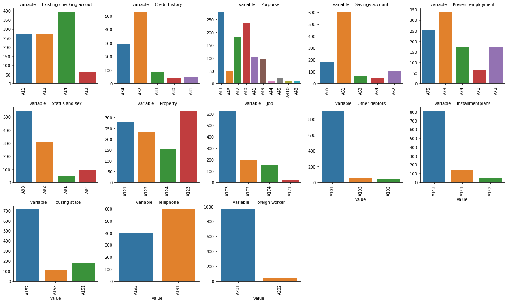
## 类别特征
# unique分布
for fea in categorical_features:
print(fea,':\n',datas[fea].unique(),':',datas[fea].nunique())Existing checking accout :
['A11' 'A12' 'A14' 'A13'] : 4
Credit history :
['A34' 'A32' 'A33' 'A30' 'A31'] : 5
Purpurse :
['A43' 'A46' 'A42' 'A40' 'A41' 'A49' 'A44' 'A45' 'A410' 'A48'] : 10
Savings account :
['A65' 'A61' 'A63' 'A64' 'A62'] : 5
Present employment :
['A75' 'A73' 'A74' 'A71' 'A72'] : 5
Status and sex :
['A93' 'A92' 'A91' 'A94'] : 4
Property :
['A121' 'A122' 'A124' 'A123'] : 4
Job :
['A173' 'A172' 'A174' 'A171'] : 4
Other debtors :
['A101' 'A103' 'A102'] : 3
Installmentplans :
['A143' 'A141' 'A142'] : 3
Housing state :
['A152' 'A153' 'A151'] : 3
Telephone :
['A192' 'A191'] : 2
Foreign worker :
['A201' 'A202'] : 2## 类别特征箱形图可视化
for c in categorical_features:
datas[c] = datas[c].astype('category')
if datas[c].isnull().any():
datas[c] = datas[c].cat.add_categories(['MISSING'])
datas[c] = datas[c].fillna('MISSING')
def boxplot(x, y, **kwargs):
sns.boxplot(x=x, y=y)
x=plt.xticks(rotation=90)
f = pd.melt(datas, id_vars=['target'], value_vars=categorical_features)
g = sns.FacetGrid(f, col="variable", col_wrap=2, sharex=False, sharey=False, size=5)
g = g.map(boxplot, "value", "target")D:\Anaconda3-python3.7\lib\site-packages\seaborn\axisgrid.py:230: UserWarning: The `size` paramter has been renamed to `height`; please update your code.
warnings.warn(msg, UserWarning)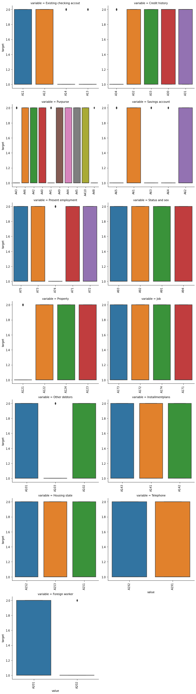
## 类别特征的小提琴图可视化
fig, axes = plt.subplots(3, 5, figsize=(30, 20))
catg_list = categorical_features
count =0
for catg in catg_list :
# cc = datas[catg].value_counts()
# xx = datas[i].unique()
plt.subplot(3,5,count+1)
count +=1
sns.violinplot(x=catg, y='target', data=datas)
plt.show()
# g = sns.FacetGrid(f, col="variable", col_wrap=4, sharex=False, sharey=False)
# g = g.map(sns.distplot, "value")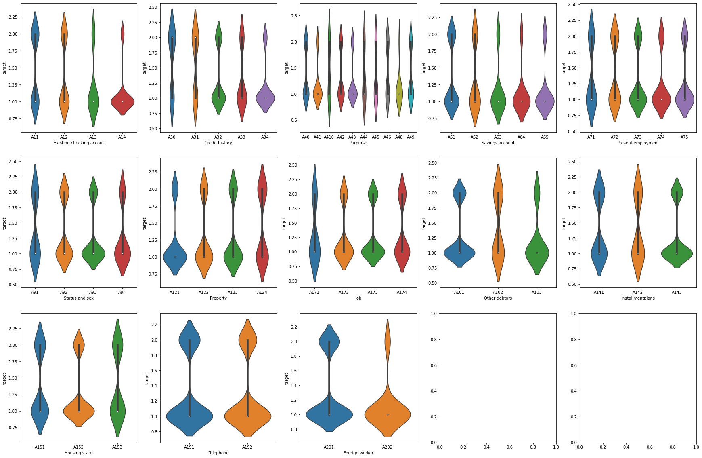
## 数值型变量分布统计
fig, axes = plt.subplots(3, 5, figsize=(30, 20))
coun = 0
for k in numeric_features:
# print(datas[k].describe()) 上文已进行均值等数据描述
# print(datas[k].value_counts())
plt.subplot(2,4,coun+1)
coun += 1
plt.hist(datas[k], orientation = 'vertical',histtype = 'bar', color ='red')
plt.tick_params(labelsize=15)
plt.title(k,fontsize = 'xx-large',color='r')
plt.show()
# log变换 之后的分布较均匀，可以进行log变换进行预测，这也是预测问题常用的trick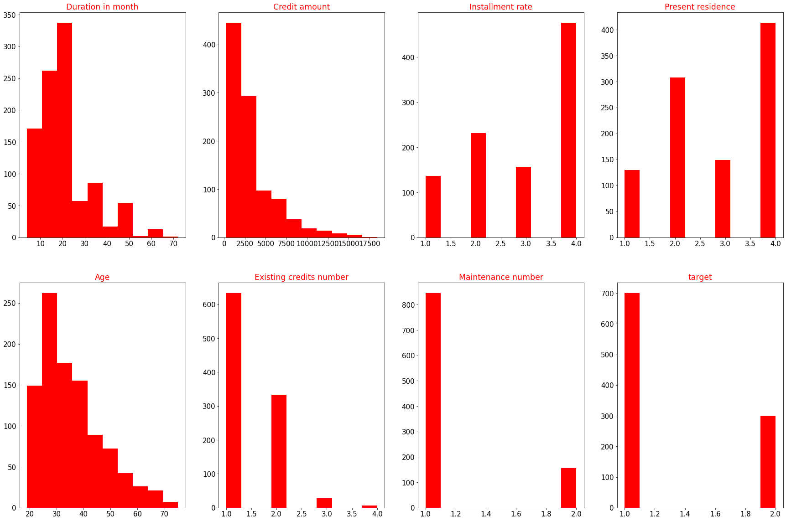
## 相关性分析
import seaborn as sns
target_numeric = datas[numeric_features]
correlation = target_numeric.corr()
print('目标列与其他数值特征的相关性：')
print(correlation['target'].sort_values(ascending = False),'\n')
## 可视化
f , ax = plt.subplots(figsize = (7, 7))
plt.title('Correlation of Numeric Features with Target',y=1,size=16)
sns.heatmap(correlation,square = True, vmax=0.8)
目标列与其他数值特征的相关性：
target 1.000000
Duration in month 0.214927
Credit amount 0.154739
Installment rate 0.072404
Present residence 0.002967
Maintenance number -0.003015
Existing credits number -0.045732
Age -0.091127
Name: target, dtype: float64
<matplotlib.axes._subplots.AxesSubplot at 0x186b5125828>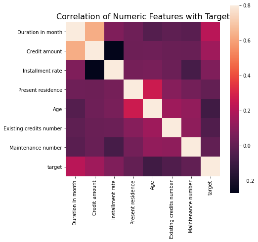
## 查看数字特征得 偏度和峰值
for col in numeric_features:
print('{:15}'.format(col),
'Skewness: {:05.2f}'.format(datas[col].skew()) ,
' ' ,
'Kurtosis: {:06.2f}'.format(datas[col].kurt())
)
## 可视化
f = pd.melt(datas, value_vars=numeric_features)
g = sns.FacetGrid(f, col="variable", col_wrap=4, sharex=False, sharey=False)
g = g.map(sns.distplot, "value")Duration in month Skewness: 01.09 Kurtosis: 000.92
Credit amount Skewness: 01.95 Kurtosis: 004.29
Installment rate Skewness: -0.53 Kurtosis: -01.21
Present residence Skewness: -0.27 Kurtosis: -01.38
Age Skewness: 01.02 Kurtosis: 000.60
Existing credits number Skewness: 01.27 Kurtosis: 001.60
Maintenance number Skewness: 01.91 Kurtosis: 001.65
target Skewness: 00.87 Kurtosis: -01.24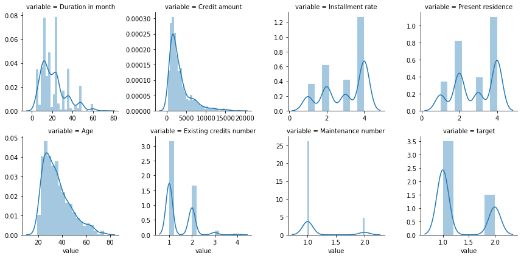
## 2.对类别型变量进行one hot编码
import pandas as pd
import numpy as np
catogory_cols = categorical_features
print(datas[catogory_cols])
dummies = pd.get_dummies(datas[catogory_cols])
data = pd.concat([datas,dummies],axis=1)
for c in catogory_cols:
data.drop([c],axis=1,inplace=True)
data.shape Existing checking accout Credit history Purpurse Savings account \
0 A11 A34 A43 A65
1 A12 A32 A43 A61
2 A14 A34 A46 A61
3 A11 A32 A42 A61
4 A11 A33 A40 A61
5 A14 A32 A46 A65
6 A14 A32 A42 A63
7 A12 A32 A41 A61
8 A14 A32 A43 A64
9 A12 A34 A40 A61
10 A12 A32 A40 A61
11 A11 A32 A49 A61
12 A12 A32 A43 A61
13 A11 A34 A40 A61
14 A11 A32 A40 A61
15 A11 A32 A43 A62
16 A14 A34 A43 A65
17 A11 A30 A49 A65
18 A12 A32 A41 A61
19 A14 A32 A43 A63
20 A14 A34 A40 A61
21 A11 A32 A43 A63
22 A11 A34 A40 A61
23 A12 A34 A41 A62
24 A14 A34 A42 A65
25 A11 A32 A42 A61
26 A14 A30 A43 A61
27 A13 A31 A43 A64
28 A12 A32 A43 A61
29 A11 A33 A49 A61
.. ... ... ... ...
970 A12 A32 A45 A62
971 A14 A32 A40 A61
972 A11 A31 A40 A61
973 A11 A32 A49 A61
974 A14 A34 A43 A61
975 A13 A32 A43 A63
976 A12 A32 A43 A61
977 A12 A33 A49 A65
978 A14 A33 A40 A61
979 A12 A31 A40 A62
980 A12 A34 A42 A61
981 A14 A32 A49 A61
982 A13 A32 A40 A62
983 A11 A32 A41 A61
984 A14 A34 A42 A61
985 A11 A34 A42 A61
986 A13 A30 A49 A61
987 A14 A32 A43 A62
988 A11 A32 A41 A61
989 A12 A34 A43 A61
990 A14 A34 A46 A65
991 A14 A31 A43 A62
992 A11 A32 A43 A65
993 A11 A32 A42 A61
994 A14 A32 A40 A65
995 A14 A32 A42 A61
996 A11 A32 A41 A61
997 A14 A32 A43 A61
998 A11 A32 A43 A61
999 A12 A34 A41 A62
Present employment Status and sex Property Job Other debtors \
0 A75 A93 A121 A173 A101
1 A73 A92 A121 A173 A101
2 A74 A93 A121 A172 A101
3 A74 A93 A122 A173 A103
4 A73 A93 A124 A173 A101
5 A73 A93 A124 A172 A101
6 A75 A93 A122 A173 A101
7 A73 A93 A123 A174 A101
8 A74 A91 A121 A172 A101
9 A71 A94 A123 A174 A101
10 A72 A92 A123 A173 A101
11 A72 A92 A122 A173 A101
12 A73 A92 A123 A173 A101
13 A75 A93 A123 A172 A101
14 A73 A92 A123 A173 A101
15 A73 A92 A123 A172 A101
16 A75 A93 A122 A173 A101
17 A72 A93 A123 A173 A101
18 A75 A92 A124 A174 A101
19 A75 A93 A123 A173 A101
20 A73 A93 A123 A173 A101
21 A73 A93 A121 A173 A101
22 A72 A93 A121 A172 A101
23 A72 A93 A122 A173 A101
24 A73 A94 A123 A173 A101
25 A73 A93 A121 A172 A101
26 A75 A94 A123 A172 A101
27 A73 A92 A121 A173 A101
28 A73 A93 A121 A173 A103
29 A75 A93 A124 A173 A101
.. ... ... ... ... ...
970 A73 A93 A121 A173 A103
971 A73 A93 A122 A172 A101
972 A71 A92 A124 A171 A102
973 A75 A93 A124 A173 A102
974 A73 A92 A123 A173 A101
975 A73 A92 A123 A172 A101
976 A73 A92 A121 A173 A103
977 A75 A93 A122 A173 A101
978 A75 A93 A123 A172 A101
979 A73 A94 A122 A173 A101
980 A74 A93 A122 A173 A101
981 A71 A93 A123 A174 A101
982 A73 A92 A123 A174 A101
983 A73 A93 A122 A173 A101
984 A74 A93 A122 A172 A101
985 A73 A92 A122 A173 A101
986 A72 A91 A122 A173 A101
987 A71 A92 A121 A173 A101
988 A71 A93 A124 A174 A101
989 A75 A93 A122 A172 A101
990 A72 A93 A122 A172 A101
991 A75 A93 A123 A172 A101
992 A74 A94 A123 A172 A101
993 A71 A93 A122 A174 A101
994 A75 A93 A123 A173 A101
995 A74 A92 A121 A172 A101
996 A73 A91 A122 A174 A101
997 A75 A93 A123 A173 A101
998 A73 A93 A124 A173 A101
999 A71 A93 A123 A173 A101
Installmentplans Housing state Telephone Foreign worker
0 A143 A152 A192 A201
1 A143 A152 A191 A201
2 A143 A152 A191 A201
3 A143 A153 A191 A201
4 A143 A153 A191 A201
5 A143 A153 A192 A201
6 A143 A152 A191 A201
7 A143 A151 A192 A201
8 A143 A152 A191 A201
9 A143 A152 A191 A201
10 A143 A151 A191 A201
11 A143 A151 A191 A201
12 A143 A152 A192 A201
13 A143 A152 A191 A201
14 A143 A151 A191 A201
15 A143 A152 A191 A201
16 A143 A152 A191 A201
17 A141 A152 A191 A201
18 A143 A153 A192 A201
19 A143 A152 A192 A201
20 A143 A152 A192 A201
21 A143 A151 A191 A201
22 A143 A151 A191 A202
23 A143 A152 A191 A201
24 A143 A152 A191 A202
25 A141 A152 A192 A201
26 A143 A152 A191 A201
27 A143 A151 A191 A201
28 A143 A152 A191 A201
29 A143 A152 A192 A201
.. ... ... ... ...
970 A143 A152 A191 A201
971 A143 A152 A191 A201
972 A143 A151 A191 A201
973 A143 A151 A191 A201
974 A143 A152 A192 A201
975 A143 A152 A191 A201
976 A143 A152 A191 A201
977 A143 A152 A191 A201
978 A143 A152 A191 A201
979 A143 A151 A191 A201
980 A143 A152 A191 A201
981 A141 A151 A192 A201
982 A141 A152 A192 A201
983 A143 A152 A191 A201
984 A143 A152 A191 A201
985 A143 A151 A191 A201
986 A143 A152 A191 A201
987 A143 A152 A191 A201
988 A143 A153 A192 A201
989 A143 A152 A191 A201
990 A143 A152 A191 A201
991 A141 A152 A191 A201
992 A143 A151 A191 A201
993 A143 A152 A192 A201
994 A143 A152 A192 A201
995 A143 A152 A191 A201
996 A143 A152 A192 A201
997 A143 A152 A191 A201
998 A143 A153 A192 A201
999 A143 A152 A191 A201
[1000 rows x 13 columns]
(1000, 62)data.columnsIndex(['Duration in month', 'Credit amount', 'Installment rate',
'Present residence', 'Age', 'Existing credits number',
'Maintenance number', 'target', 'Existing checking accout_A11',
'Existing checking accout_A12', 'Existing checking accout_A13',
'Existing checking accout_A14', 'Credit history_A30',
'Credit history_A31', 'Credit history_A32', 'Credit history_A33',
'Credit history_A34', 'Purpurse_A40', 'Purpurse_A41', 'Purpurse_A410',
'Purpurse_A42', 'Purpurse_A43', 'Purpurse_A44', 'Purpurse_A45',
'Purpurse_A46', 'Purpurse_A48', 'Purpurse_A49', 'Savings account_A61',
'Savings account_A62', 'Savings account_A63', 'Savings account_A64',
'Savings account_A65', 'Present employment_A71',
'Present employment_A72', 'Present employment_A73',
'Present employment_A74', 'Present employment_A75',
'Status and sex_A91', 'Status and sex_A92', 'Status and sex_A93',
'Status and sex_A94', 'Property_A121', 'Property_A122', 'Property_A123',
'Property_A124', 'Job_A171', 'Job_A172', 'Job_A173', 'Job_A174',
'Other debtors_A101', 'Other debtors_A102', 'Other debtors_A103',
'Installmentplans_A141', 'Installmentplans_A142',
'Installmentplans_A143', 'Housing state_A151', 'Housing state_A152',
'Housing state_A153', 'Telephone_A191', 'Telephone_A192',
'Foreign worker_A201', 'Foreign worker_A202'],
dtype='object')思考：是否要对数字变量进行异常值检测
如果要删除异常值，则只能在训练集上进行
# 这里我包装了一个异常值处理的代码，可以随便调用。
def outliers_proc(data, col_name, scale=3):
"""
用于清洗异常值，默认用 box_plot（scale=3）进行清洗
:param data: 接收 pandas 数据格式
:param col_name: pandas 列名
:param scale: 尺度
:return:
"""
def box_plot_outliers(data_ser, box_scale):
"""
利用箱线图去除异常值
:param data_ser: 接收 pandas.Series 数据格式
:param box_scale: 箱线图尺度，
:return:
"""
iqr = box_scale * (data_ser.quantile(0.75) - data_ser.quantile(0.25))
val_low = data_ser.quantile(0.25) - iqr
val_up = data_ser.quantile(0.75) + iqr
rule_low = (data_ser < val_low)
rule_up = (data_ser > val_up)
return (rule_low, rule_up), (val_low, val_up)
data_n = data.copy()
data_series = data_n[col_name]
rule, value = box_plot_outliers(data_series, box_scale=scale)
index = np.arange(data_series.shape[0])[rule[0] | rule[1]]
print("Delete number is: {}".format(len(index)))
data_n = data_n.drop(index)
data_n.reset_index(drop=True, inplace=True)
print("Now column number is: {}".format(data_n.shape[0]))
index_low = np.arange(data_series.shape[0])[rule[0]]
outliers = data_series.iloc[index_low]
print("Description of data less than the lower bound is:")
print(pd.Series(outliers).describe())
index_up = np.arange(data_series.shape[0])[rule[1]]
outliers = data_series.iloc[index_up]
print("Description of data larger than the upper bound is:")
print(pd.Series(outliers).describe())
fig, ax = plt.subplots(1, 2, figsize=(10, 7))
sns.boxplot(y=data[col_name], data=data, palette="Set1", ax=ax[0])
sns.boxplot(y=data_n[col_name], data=data_n, palette="Set1", ax=ax[1])
return data_n## 数值型变量后续可以进行 数据分桶操作
## 对 Age 进行分桶 ##
data ['Age'].describe()
data.head()
bin = [i*10 for i in range(10)]
data['age_bin'] = pd.cut(data['Age'], bin, labels=False)
data[['age_bin', 'Age']].head()
data.columns
data.shape(1000, 63)data['age_bin'].plot.hist()<matplotlib.axes._subplots.AxesSubplot at 0x186b7692c50>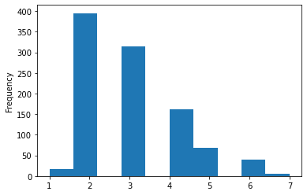
## 训练集测试集划分
X = np.hstack((data.iloc[:,0:7].values,data.iloc[:,8:].values))
y = data['target'].values
from sklearn.model_selection import train_test_split
## 划分数据集
X_train, X_test, y_train, y_test = \
train_test_split(X, y, stratify=y, test_size=0.3, random_state=0) #stratified 切分， 使切分后的数据集更好地保留标签的相对比例## 对 X数据 标准化
from sklearn.preprocessing import StandardScaler
stdsc = StandardScaler()
X_train_std = stdsc.fit_transform(X_train)
X_test_std = stdsc.transform(X_test)
# x_train_std
## 对y数据标签化
from sklearn.preprocessing import LabelEncoder
le = LabelEncoder()
y_test = le.fit_transform(y_test)
y_train = le.fit_transform(y_train)3 - 模型选择和评价
## Perceptron classifier.在训练集上 用五折交叉验证,评价准确率accuracy
from sklearn.linear_model import Perceptron
from sklearn.model_selection import cross_val_score
ppn = Perceptron(n_iter_no_change=40, eta0=0.1, random_state=1)
# ppn.fit(X_train_std, y_train) ##五折交叉验证不需要fit
score_p = cross_val_score(ppn,X_train_std,y_train,verbose=1,cv=5,scoring='accuracy') ##自动包含fit训练过程
print("Accuracy: %0.2f (+/- %0.2f) [%s]"
% (score_p.mean(), score_p.std(), 'Perceptron'))
# y_pred = ppn.predict(X_test_std) # predict
# print('Misclassified samples: %d' % (y_test != y_pred).sum()) # 错误个数Accuracy: 0.69 (+/- 0.07) [Perceptron]
[Parallel(n_jobs=1)]: Using backend SequentialBackend with 1 concurrent workers.
[Parallel(n_jobs=1)]: Done 5 out of 5 | elapsed: 0.0s finished## LogisticRegression 在训练集上 五折交叉验证 accuracy评价
from sklearn.linear_model import LogisticRegression
lr = LogisticRegression(penalty='l2', C=10, random_state=1)
# lr.fit(X_train_std, y_train)
from sklearn.model_selection import cross_val_score
scores_R = cross_val_score(lr, X_train_std, y_train, verbose=1,cv = 5, scoring='accuracy')
label = '逻辑回归模型'
print("Accuracy: %0.2f (+/- %0.2f) [%s]"
% (scores_R.mean(), scores_R.std(), label))Accuracy: 0.74 (+/- 0.03) [逻辑回归模型]
[Parallel(n_jobs=1)]: Using backend SequentialBackend with 1 concurrent workers.
[Parallel(n_jobs=1)]: Done 5 out of 5 | elapsed: 0.0s finished## SVM 模型 kernel='rbf' 针对非线性问题
from sklearn.svm import SVC
svm = SVC(kernel='rbf',C=1.0,gamma = 0.1,random_state=1) #gamma = 0.1
# svm.fit(X_train_std,y_train)
scores_s = cross_val_score(svm, X_train_std, y_train, verbose=1,cv = 5, scoring='accuracy')
print("Accuracy: %0.2f (+/- %0.2f) [%s]"
% (scores_s.mean(), scores_s.std(), 'SVM'))[Parallel(n_jobs=1)]: Using backend SequentialBackend with 1 concurrent workers.
Accuracy: 0.70 (+/- 0.01) [SVM]
[Parallel(n_jobs=1)]: Done 5 out of 5 | elapsed: 0.2s finished## SVM模型 kernel='linear'
from sklearn.svm import SVC
svm = SVC(kernel='linear',C=1.0,random_state=1)
# svm.fit(X_train_std,y_train)
scores_s = cross_val_score(svm, X_train_std, y_train, verbose=1,cv = 5, scoring='accuracy')
print("Accuracy: %0.2f (+/- %0.2f) [%s]"
% (scores_s.mean(), scores_s.std(), 'SVM'))[Parallel(n_jobs=1)]: Using backend SequentialBackend with 1 concurrent workers.
Accuracy: 0.73 (+/- 0.02) [SVM]
[Parallel(n_jobs=1)]: Done 5 out of 5 | elapsed: 0.6s finished## KNN模型
from sklearn.neighbors import KNeighborsClassifier
knn = KNeighborsClassifier(n_neighbors=5,p=2,metric='minkowski')
# knn.fit(X_train_std,y_train)
scores_k = cross_val_score(knn, X_train_std, y_train, verbose=1,cv = 5, scoring='accuracy')
print("Accuracy: %0.2f (+/- %0.2f) [%s]"
% (scores_k.mean(), scores_k.std(), 'KNN'))[Parallel(n_jobs=1)]: Using backend SequentialBackend with 1 concurrent workers.
Accuracy: 0.73 (+/- 0.03) [KNN]
[Parallel(n_jobs=1)]: Done 5 out of 5 | elapsed: 0.1s finished## 决策树分类
from sklearn.tree import DecisionTreeClassifier
tree = DecisionTreeClassifier(criterion='entropy', max_depth=3, random_state=1)
# tree.fit(X_train_std, y_train)
scores_d = cross_val_score(knn, X_train_std, y_train, verbose=1,cv = 5, scoring='accuracy')
print("Accuracy: %0.2f (+/- %0.2f) [%s]"
% (scores_d.mean(), scores_d.std(), 'DecisionTree'))[Parallel(n_jobs=1)]: Using backend SequentialBackend with 1 concurrent workers.
Accuracy: 0.73 (+/- 0.03) [DecisionTree]
[Parallel(n_jobs=1)]: Done 5 out of 5 | elapsed: 0.1s finished## 集成模型分类：随即森林、多数票机制，bagging，Adaboost
from sklearn.ensemble import VotingClassifier
from sklearn.ensemble import RandomForestClassifier
from sklearn.ensemble import BaggingClassifier
from sklearn.ensemble import AdaBoostClassifier
clf_labels = ['随即森林','多数票机制','bagging','Adaboost']
forest = RandomForestClassifier(criterion='entropy',
n_estimators=100,
random_state=1,
n_jobs=2)
# 用 tree,knn,lr 作 base
mv_clf = VotingClassifier(
estimators=[('c1', lr), ('c2', knn), ('c3', tree)], voting='soft')
# 用 tree 作 base
bag = BaggingClassifier(base_estimator=tree,
n_estimators=500,
max_samples=1.0, # 子采样 samples 的比例
max_features=1.0, # 子采样 features 的比例
bootstrap=True, # 采样 samples 时是否使用 bootstrap
bootstrap_features=False, # 采样 features 时是否使用 bootstrap
random_state=1)
# 用 tree 作 base
ada = AdaBoostClassifier(base_estimator=tree,
n_estimators=500,
learning_rate=0.1,
random_state=1)
all_clf =[forest,mv_clf,bag,ada]
for clf_label, clf in zip(clf_labels, all_clf):
scores = cross_val_score(estimator=clf, X=X_train_std, y=y_train,
verbose=1,cv=5, scoring='accuracy')
print("Accuracy : %0.2f (+/- %0.2f) [%s]"
% (scores.mean(), scores.std(), clf_label))[Parallel(n_jobs=1)]: Using backend SequentialBackend with 1 concurrent workers.
[Parallel(n_jobs=1)]: Done 5 out of 5 | elapsed: 2.1s finished
[Parallel(n_jobs=1)]: Using backend SequentialBackend with 1 concurrent workers.
Accuracy : 0.77 (+/- 0.03) [随即森林]
[Parallel(n_jobs=1)]: Done 5 out of 5 | elapsed: 0.1s finished
[Parallel(n_jobs=1)]: Using backend SequentialBackend with 1 concurrent workers.
Accuracy : 0.76 (+/- 0.02) [多数票机制]
[Parallel(n_jobs=1)]: Done 5 out of 5 | elapsed: 9.3s finished
[Parallel(n_jobs=1)]: Using backend SequentialBackend with 1 concurrent workers.
Accuracy : 0.73 (+/- 0.00) [bagging]
Accuracy : 0.72 (+/- 0.02) [Adaboost]
[Parallel(n_jobs=1)]: Done 5 out of 5 | elapsed: 12.9s finished## 其他模型的测试集准确率：
from sklearn.metrics import accuracy_score
forest.fit(X_train_std,y_train)
y_pred_forest = forest.predict(X_test_std)
print('随机森林在测试集上的accuracy：',accuracy_score(y_test,y_pred_forest))
mv_clf.fit(X_train_std,y_train)
y_test_pred_vote = forest.predict(X_test_std)
print('多数票机制在测试集上的accuracy：',accuracy_score(y_test,y_test_pred_vote))
lr.fit(X_train_std,y_train)
y_test_pred_lr = lr.predict(X_test_std)
print('逻辑回归在测试集上的accuracy：',accuracy_score(y_test,y_test_pred_lr))
svm.fit(X_train_std,y_train)
y_pred_svm=svm.predict(X_test_std)
print('SVM在测试集上的accuracy：',accuracy_score(y_test,y_pred_svm))
knn.fit(X_train_std,y_train)
y_pred_knn=knn.predict(X_test_std)
print('KNN在测试集上的accuracy：',accuracy_score(y_test,y_pred_knn))随机森林在测试集上的accuracy： 0.76
多数票机制在测试集上的accuracy： 0.76
逻辑回归在测试集上的accuracy： 0.76
SVM在测试集上的accuracy： 0.74
KNN在测试集上的accuracy： 0.6966666666666667##最优模型预测测试集 , 准确率，召回率，调和值，和auc，并绘制roc曲线
from sklearn.metrics import precision_score
from sklearn.metrics import f1_score
from sklearn.metrics import recall_score
from sklearn.metrics import roc_curve,auc
from sklearn.metrics import roc_auc_score
forest.fit(X_train_std,y_train)
y_train_pred = forest.predict(X_train_std)
y_test_pred = forest.predict(X_test_std)
print('随机森林在训练集上的precision准确率：',precision_score(y_train,y_train_pred))
print('随机森林在测试集上的precision准确率：',precision_score(y_test,y_test_pred))
print('随机森林在测试集上的召回率：',recall_score(y_test,y_test_pred))
print('随机森林在测试集上的f1调和值：',f1_score(y_test,y_test_pred))
print('随机森林在测试集上的AUC：',roc_auc_score(y_test,y_test_pred))
fpr, tpr, thresholds = roc_curve(y_true=y_test,y_score=y_test_pred)
roc_auc = auc(x =fpr,y=tpr)
plt.plot(fpr, tpr,
color='r',
linestyle='-.',
label='RandomForest (auc = %0.2f)' % roc_auc)
plt.legend(loc='lower right')
plt.plot([0, 1], [0, 1],
linestyle='--',
color='gray',
linewidth=2)
plt.xlim([-0.1, 1.1])
plt.ylim([-0.1, 1.1])
plt.grid()
plt.xlabel('False Positive Rate')
plt.ylabel('True Positive Rate')
plt.tight_layout()随机森林在训练集上的precision准确率： 1.0
随机森林在测试集上的precision准确率： 0.725
随机森林在测试集上的召回率： 0.32222222222222224
随机森林在测试集上的f1调和值： 0.4461538461538462
随机森林在测试集上的AUC： 0.6349206349206349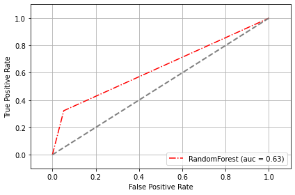
## 查看数据拟合情况
from sklearn.model_selection import learning_curve
train_sizes, train_scores, test_scores =learning_curve(estimator=forest,
X=X_train_std,
y=y_train,
train_sizes=np.linspace(
0.1, 1.0, 10),
cv=5,
n_jobs=-1)
train_mean = np.mean(train_scores, axis=1)
train_std = np.std(train_scores, axis=1)
test_mean = np.mean(test_scores, axis=1)
test_std = np.std(test_scores, axis=1)
# plot train_mean
plt.plot(train_sizes, train_mean,color='blue',
marker='o',markersize=5, label='training accuracy')
# plot train_std
plt.fill_between(train_sizes,
train_mean + train_std,
train_mean - train_std,
alpha=0.15, color='blue')
# plot test_mean
plt.plot(train_sizes, test_mean,color='green',
linestyle='--', marker='s', markersize=5,
label='validation accuracy')
# plot test_std
plt.fill_between(train_sizes,
test_mean + test_std,
test_mean - test_std,
alpha=0.15, color='green')
plt.grid()
plt.xlabel('Number of training samples')
plt.ylabel('Accuracy')
plt.legend(loc='lower right')
plt.ylim([0.5, 1.01])
plt.tight_layout()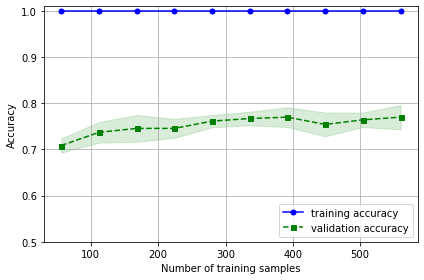
## 验证曲线 可以进行基本的参数调优 并查看数据拟合情况
from sklearn.model_selection import validation_curve
import matplotlib
# 设定参数选项 ##针对一个参数 max_depth
param_range = [2, 3, 4, 5, 6, 8]
# 通过 CV 获得不同参数的模型效果
train_scores, test_scores = \
validation_curve(estimator=forest,
X=X_train_std, y=y_train,
param_name='max_depth', # 用 max_depth 找到参数对应的名称
param_range=param_range, cv=5)
train_mean = np.mean(train_scores, axis=1)
train_std = np.std(train_scores, axis=1)
test_mean = np.mean(test_scores, axis=1)
test_std = np.std(test_scores, axis=1)
plt.plot(param_range, train_mean,
color='blue', marker='o',
markersize=5, label='training accuracy')
plt.fill_between(param_range, train_mean + train_std,
train_mean - train_std, alpha=0.15,
color='blue')
plt.plot(param_range, test_mean,
color='green', linestyle='--',
marker='s', markersize=5,
label='validation accuracy')
plt.fill_between(param_range,
test_mean + test_std,
test_mean - test_std,
alpha=0.15, color='green')
plt.rcParams['axes.unicode_minus'] = False
matplotlib.rcParams.update(
{
'text.usetex': False,
'font.family': 'stixgeneral',
'mathtext.fontset': 'stix',
}
)
plt.grid()
# plt.xscale('log')
plt.legend(loc='lower right')
plt.xlabel('Parameter max_depth')
plt.ylabel('Accuracy')
plt.ylim([0.5, 1.03])
plt.tight_layout()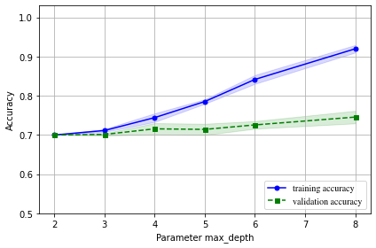
4-超参数调优 并选择最优模型## 网格搜索 随机森林篇
## 其他参数随机森林模型（暂时最好）
rf_best = RandomForestClassifier(random_state=1,criterion='gini',
max_depth= None, max_features= 15,
n_estimators=250, oob_score= True)
scores_train = cross_val_score(rf_best, X_train_std, y_train, scoring='accuracy', cv=5)
print('CV accuracy:',np.mean(scores_train))
rf_best.fit(X_train_std, y_train)
y_prediction = rf_best.predict(X_test_std)
print('Test accuracy: %.3f' % accuracy_score(y_test, y_prediction))
print('Test AUC: %.3f' % roc_auc_score(y_test, y_prediction))CV accuracy: 0.7757142857142857
Test accuracy: 0.777
Test AUC: 0.675SVM篇
## 逻辑回归篇
from sklearn.model_selection import RandomizedSearchCV
from sklearn.model_selection import GridSearchCV
from scipy.stats import expon
lr_n = LogisticRegression(random_state=1)
# param_range = [10**c for c in range(-4,4)]
param_range =[0.01]
param_dist = {'C': param_range,
'penalty': ['l1','l2'],
'solver': ['liblinear','lbfgs','newton-cg','sag']
}
rs_lr = GridSearchCV(estimator=lr_n,
param_grid=param_dist,
scoring='accuracy',
cv=5, n_jobs=-1)
rs_lr = rs_lr.fit(X_train_std, y_train)
print('CV accuracy:',rs_lr.best_score_)
clf_best_lr = rs_lr.best_estimator_
clf_best_lr.fit(X_train_std, y_train)
print('Test accuracy: %.3f' % clf_best_lr.score(X_test_std, y_test))
print(rs_lr.best_params_)CV accuracy: 0.75
Test accuracy: 0.773
{'C': 0.01, 'penalty': 'l2', 'solver': 'liblinear'}KNN篇
5-特征选择
#包裹式特征选择方法SBS
from sklearn.base import clone
from itertools import combinations
import numpy as np
from sklearn.metrics import accuracy_score
from sklearn.model_selection import train_test_split
class SBS():
'''
k_features: 想要返回的理想特征数
'''
def __init__(self, estimator, k_features,scoring=accuracy_score, test_size=0.25, random_state=1):
self.scoring = scoring
self.estimator = clone(estimator)
self.k_features = k_features
self.test_size = test_size
self.random_state = random_state
def fit(self, X, y):
X_train, X_test, y_train, y_test = train_test_split(X, y, test_size=self.test_size, random_state=self.random_state)
dim = X_train.shape[1]
self.indices_ = tuple(range(dim))
self.subsets_ = [self.indices_]
score = self._calc_score(X_train, y_train, X_test, y_test, self.indices_)
self.scores_ = [score]
while dim > self.k_features:
scores = []
subsets = []
for p in combinations(self.indices_, r=dim-1):
score = self._calc_score(X_train, y_train, X_test, y_test, p)
scores.append(score)
subsets.append(p)
best = np.argmax(scores)
self.indices_ = subsets[best]
self.subsets_.append(self.indices_)
dim-=1
self.scores_.append(scores[best])
self.k_score_ = self.scores_[-1]
return self
def transform(self, X):
return X[:, self.indices_]
def _calc_score(self, X_train, y_train, X_test, y_test, indices):
self.estimator.fit(X_train[:, indices], y_train)
y_pred = self.estimator.predict(X_test[:, indices])
score = self.scoring(y_test, y_pred)
return score
#使用逻辑回归分类器实现SBS
rf_base = RandomForestClassifier(random_state=1,criterion='gini',
max_depth= None,
n_estimators=250, oob_score= True)
rf_base.fit(X_train_std,y_train)
sbs=SBS(rf_base,k_features=1)
sbs.fit(X_train_std,y_train)<__main__.SBS at 0x186b5ed7f60>#绘制验证数据集上计算的随机森林分类器的分类准确度
k_feat = [len(k) for k in sbs.subsets_]
plt.plot(k_feat, sbs.scores_, marker='o')
plt.ylim([0.7, 1.02])
plt.ylabel('Accuracy')
plt.xlabel('Number of features')
plt.grid()
plt.show()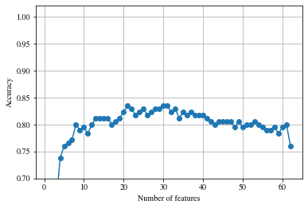
#选取最优特征子集
print(sbs.subsets_[47])
k15=list(sbs.subsets_[47])
print(data.columns[1:][k15])(0, 1, 2, 4, 5, 7, 10, 12, 16, 24, 26, 30, 32, 33, 36)
Index(['Credit amount', 'Installment rate', 'Present residence',
'Existing credits number', 'Maintenance number',
'Existing checking accout_A11', 'Existing checking accout_A14',
'Credit history_A31', 'Purpurse_A40', 'Purpurse_A48',
'Savings account_A61', 'Savings account_A65', 'Present employment_A72',
'Present employment_A73', 'Status and sex_A91'],
dtype='object')#评估性能
#原始测试集上的性能
rf_base.fit(X_train_std,y_train)
y_train_pred = rf_base.predict(X_train_std)
y_test_pred = rf_base.predict(X_test_std)
print('随机森林在训练集上的准确率：',accuracy_score(y_train,y_train_pred))
print('逻辑回归在测试集上的准确率：',accuracy_score(y_test,y_test_pred))
#特征选择后的性能
rf_base.fit(X_train_std[:,k15],y_train)
y_train_pred = rf_base.predict(X_train_std[:,k15])
y_test_pred = rf_base.predict(X_test_std[:,k15])
print('特征选择后逻辑回归在训练集上的准确率：',accuracy_score(y_train,y_train_pred))
print('特征选择后逻辑回归在测试集上的准确率：',accuracy_score(y_test,y_test_pred))随机森林在训练集上的准确率： 1.0
逻辑回归在测试集上的准确率： 0.77
特征选择后逻辑回归在训练集上的准确率： 1.0
特征选择后逻辑回归在测试集上的准确率： 0.7766666666666666#包裹式特征选择方法RFECV
from sklearn.model_selection import StratifiedKFold
from sklearn.feature_selection import RFECV
rfecv = RFECV(rf_base, # 学习器
step=1, # 每次移除特征个数
# n_features_to_select=15, # 要选出几个 feature
cv=StratifiedKFold(5), # 交叉验证次数
scoring='accuracy', # 学习器的评价标准
verbose = 1,
n_jobs = 1
)
rfecv.fit(X_train_std,y_train)
X_rfecv_selected = rfecv.transform(X_train_std)
# 查看选出了哪几个 feature
mask = rfecv.get_support()
print(mask)
plt.matshow(mask.reshape(1, -1), cmap='gray_r')Fitting estimator with 62 features.
Fitting estimator with 61 features.
Fitting estimator with 60 features.
Fitting estimator with 59 features.
Fitting estimator with 58 features.
Fitting estimator with 57 features.
Fitting estimator with 56 features.
Fitting estimator with 55 features.
Fitting estimator with 54 features.
Fitting estimator with 53 features.
Fitting estimator with 52 features.
Fitting estimator with 51 features.
Fitting estimator with 50 features.
Fitting estimator with 49 features.
Fitting estimator with 48 features.
Fitting estimator with 47 features.
Fitting estimator with 46 features.
Fitting estimator with 45 features.
Fitting estimator with 44 features.
Fitting estimator with 43 features.
Fitting estimator with 42 features.
Fitting estimator with 41 features.
Fitting estimator with 40 features.
Fitting estimator with 39 features.
Fitting estimator with 38 features.
Fitting estimator with 37 features.
Fitting estimator with 36 features.
Fitting estimator with 35 features.
Fitting estimator with 34 features.
Fitting estimator with 33 features.
Fitting estimator with 32 features.
Fitting estimator with 31 features.
Fitting estimator with 30 features.
Fitting estimator with 29 features.
Fitting estimator with 28 features.
Fitting estimator with 27 features.
Fitting estimator with 26 features.
Fitting estimator with 25 features.
Fitting estimator with 24 features.
Fitting estimator with 23 features.
Fitting estimator with 22 features.
Fitting estimator with 21 features.
Fitting estimator with 20 features.
Fitting estimator with 19 features.
Fitting estimator with 18 features.
Fitting estimator with 17 features.
Fitting estimator with 16 features.
Fitting estimator with 15 features.
Fitting estimator with 14 features.
Fitting estimator with 13 features.
Fitting estimator with 12 features.
Fitting estimator with 11 features.
Fitting estimator with 10 features.
Fitting estimator with 9 features.
Fitting estimator with 8 features.
Fitting estimator with 7 features.
Fitting estimator with 6 features.
Fitting estimator with 5 features.
Fitting estimator with 4 features.
Fitting estimator with 3 features.
Fitting estimator with 2 features.
Fitting estimator with 62 features.
Fitting estimator with 61 features.
Fitting estimator with 60 features.
Fitting estimator with 59 features.
Fitting estimator with 58 features.
Fitting estimator with 57 features.
Fitting estimator with 56 features.
Fitting estimator with 55 features.
Fitting estimator with 54 features.
Fitting estimator with 53 features.
Fitting estimator with 52 features.
Fitting estimator with 51 features.
Fitting estimator with 50 features.
Fitting estimator with 49 features.
Fitting estimator with 48 features.
Fitting estimator with 47 features.
Fitting estimator with 46 features.
Fitting estimator with 45 features.
Fitting estimator with 44 features.
Fitting estimator with 43 features.
Fitting estimator with 42 features.
Fitting estimator with 41 features.
Fitting estimator with 40 features.
Fitting estimator with 39 features.
Fitting estimator with 38 features.
Fitting estimator with 37 features.
Fitting estimator with 36 features.
Fitting estimator with 35 features.
Fitting estimator with 34 features.
Fitting estimator with 33 features.
Fitting estimator with 32 features.
Fitting estimator with 31 features.
Fitting estimator with 30 features.
Fitting estimator with 29 features.
Fitting estimator with 28 features.
Fitting estimator with 27 features.
Fitting estimator with 26 features.
Fitting estimator with 25 features.
Fitting estimator with 24 features.
Fitting estimator with 23 features.
Fitting estimator with 22 features.
Fitting estimator with 21 features.
Fitting estimator with 20 features.
Fitting estimator with 19 features.
Fitting estimator with 18 features.
Fitting estimator with 17 features.
Fitting estimator with 16 features.
Fitting estimator with 15 features.
Fitting estimator with 14 features.
Fitting estimator with 13 features.
Fitting estimator with 12 features.
Fitting estimator with 11 features.
Fitting estimator with 10 features.
Fitting estimator with 9 features.
Fitting estimator with 8 features.
Fitting estimator with 7 features.
Fitting estimator with 6 features.
Fitting estimator with 5 features.
Fitting estimator with 4 features.
Fitting estimator with 3 features.
Fitting estimator with 2 features.
Fitting estimator with 62 features.
Fitting estimator with 61 features.
Fitting estimator with 60 features.
Fitting estimator with 59 features.
Fitting estimator with 58 features.
Fitting estimator with 57 features.
Fitting estimator with 56 features.
Fitting estimator with 55 features.
Fitting estimator with 54 features.
Fitting estimator with 53 features.
Fitting estimator with 52 features.
Fitting estimator with 51 features.
Fitting estimator with 50 features.
Fitting estimator with 49 features.
Fitting estimator with 48 features.
Fitting estimator with 47 features.
Fitting estimator with 46 features.
Fitting estimator with 45 features.
Fitting estimator with 44 features.
Fitting estimator with 43 features.
Fitting estimator with 42 features.
Fitting estimator with 41 features.
Fitting estimator with 40 features.
Fitting estimator with 39 features.
Fitting estimator with 38 features.
Fitting estimator with 37 features.
Fitting estimator with 36 features.
Fitting estimator with 35 features.
Fitting estimator with 34 features.
Fitting estimator with 33 features.
Fitting estimator with 32 features.
Fitting estimator with 31 features.
Fitting estimator with 30 features.
Fitting estimator with 29 features.
Fitting estimator with 28 features.
Fitting estimator with 27 features.
Fitting estimator with 26 features.
Fitting estimator with 25 features.
Fitting estimator with 24 features.
Fitting estimator with 23 features.
Fitting estimator with 22 features.
Fitting estimator with 21 features.
Fitting estimator with 20 features.
Fitting estimator with 19 features.
Fitting estimator with 18 features.
Fitting estimator with 17 features.
Fitting estimator with 16 features.
Fitting estimator with 15 features.
Fitting estimator with 14 features.
Fitting estimator with 13 features.
Fitting estimator with 12 features.
Fitting estimator with 11 features.
Fitting estimator with 10 features.
Fitting estimator with 9 features.
Fitting estimator with 8 features.
Fitting estimator with 7 features.
Fitting estimator with 6 features.
Fitting estimator with 5 features.
Fitting estimator with 4 features.
Fitting estimator with 3 features.
Fitting estimator with 2 features.
Fitting estimator with 62 features.
Fitting estimator with 61 features.
Fitting estimator with 60 features.
Fitting estimator with 59 features.
Fitting estimator with 58 features.
Fitting estimator with 57 features.
Fitting estimator with 56 features.
Fitting estimator with 55 features.
Fitting estimator with 54 features.
Fitting estimator with 53 features.
Fitting estimator with 52 features.
Fitting estimator with 51 features.
Fitting estimator with 50 features.
Fitting estimator with 49 features.
Fitting estimator with 48 features.
Fitting estimator with 47 features.
Fitting estimator with 46 features.
Fitting estimator with 45 features.
Fitting estimator with 44 features.
Fitting estimator with 43 features.
Fitting estimator with 42 features.
Fitting estimator with 41 features.
Fitting estimator with 40 features.
Fitting estimator with 39 features.
Fitting estimator with 38 features.
Fitting estimator with 37 features.
Fitting estimator with 36 features.
Fitting estimator with 35 features.
Fitting estimator with 34 features.
Fitting estimator with 33 features.
Fitting estimator with 32 features.
Fitting estimator with 31 features.
Fitting estimator with 30 features.
Fitting estimator with 29 features.
Fitting estimator with 28 features.
Fitting estimator with 27 features.
Fitting estimator with 26 features.
Fitting estimator with 25 features.
Fitting estimator with 24 features.
Fitting estimator with 23 features.
Fitting estimator with 22 features.
Fitting estimator with 21 features.
Fitting estimator with 20 features.
Fitting estimator with 19 features.
Fitting estimator with 18 features.
Fitting estimator with 17 features.
Fitting estimator with 16 features.
Fitting estimator with 15 features.
Fitting estimator with 14 features.
Fitting estimator with 13 features.
Fitting estimator with 12 features.
Fitting estimator with 11 features.
Fitting estimator with 10 features.
Fitting estimator with 9 features.
Fitting estimator with 8 features.
Fitting estimator with 7 features.
Fitting estimator with 6 features.
Fitting estimator with 5 features.
Fitting estimator with 4 features.
Fitting estimator with 3 features.
Fitting estimator with 2 features.
Fitting estimator with 62 features.
Fitting estimator with 61 features.
Fitting estimator with 60 features.
Fitting estimator with 59 features.
Fitting estimator with 58 features.
Fitting estimator with 57 features.
Fitting estimator with 56 features.
Fitting estimator with 55 features.
Fitting estimator with 54 features.
Fitting estimator with 53 features.
Fitting estimator with 52 features.
Fitting estimator with 51 features.
Fitting estimator with 50 features.
Fitting estimator with 49 features.
Fitting estimator with 48 features.
Fitting estimator with 47 features.
Fitting estimator with 46 features.
Fitting estimator with 45 features.
Fitting estimator with 44 features.
Fitting estimator with 43 features.
Fitting estimator with 42 features.
Fitting estimator with 41 features.
Fitting estimator with 40 features.
Fitting estimator with 39 features.
Fitting estimator with 38 features.
Fitting estimator with 37 features.
Fitting estimator with 36 features.
Fitting estimator with 35 features.
Fitting estimator with 34 features.
Fitting estimator with 33 features.
Fitting estimator with 32 features.
Fitting estimator with 31 features.
Fitting estimator with 30 features.
Fitting estimator with 29 features.
Fitting estimator with 28 features.
Fitting estimator with 27 features.
Fitting estimator with 26 features.
Fitting estimator with 25 features.
Fitting estimator with 24 features.
Fitting estimator with 23 features.
Fitting estimator with 22 features.
Fitting estimator with 21 features.
Fitting estimator with 20 features.
Fitting estimator with 19 features.
Fitting estimator with 18 features.
Fitting estimator with 17 features.
Fitting estimator with 16 features.
Fitting estimator with 15 features.
Fitting estimator with 14 features.
Fitting estimator with 13 features.
Fitting estimator with 12 features.
Fitting estimator with 11 features.
Fitting estimator with 10 features.
Fitting estimator with 9 features.
Fitting estimator with 8 features.
Fitting estimator with 7 features.
Fitting estimator with 6 features.
Fitting estimator with 5 features.
Fitting estimator with 4 features.
Fitting estimator with 3 features.
Fitting estimator with 2 features.
Fitting estimator with 62 features.
Fitting estimator with 61 features.
Fitting estimator with 60 features.
Fitting estimator with 59 features.
Fitting estimator with 58 features.
Fitting estimator with 57 features.
Fitting estimator with 56 features.
Fitting estimator with 55 features.
Fitting estimator with 54 features.
Fitting estimator with 53 features.
Fitting estimator with 52 features.
Fitting estimator with 51 features.
Fitting estimator with 50 features.
Fitting estimator with 49 features.
Fitting estimator with 48 features.
Fitting estimator with 47 features.
Fitting estimator with 46 features.
Fitting estimator with 45 features.
Fitting estimator with 44 features.
Fitting estimator with 43 features.
Fitting estimator with 42 features.
Fitting estimator with 41 features.
Fitting estimator with 40 features.
[ True True True True True True True True True False True False
True True False True True False False True True False False False
False True True False False False True False True True True True
False True True False True True True False False True True True
True False False True False True True True False True True False
False True]
<matplotlib.image.AxesImage at 0x186b6d25e10>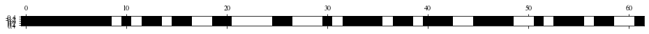
#展示
print(data.columns[1:][mask])
print("得到的特征数量:",rfecv.n_features_)
print("特征等级:",list(rfecv.ranking_))
print("交叉验证的CV分数:",np.mean(rfecv.grid_scores_))Index(['Credit amount', 'Installment rate', 'Present residence', 'Age',
'Existing credits number', 'Maintenance number', 'target',
'Existing checking accout_A11', 'Existing checking accout_A12',
'Existing checking accout_A14', 'Credit history_A31',
'Credit history_A32', 'Credit history_A34', 'Purpurse_A40',
'Purpurse_A42', 'Purpurse_A43', 'Purpurse_A49', 'Savings account_A61',
'Savings account_A65', 'Present employment_A72',
'Present employment_A73', 'Present employment_A74',
'Present employment_A75', 'Status and sex_A92', 'Status and sex_A93',
'Property_A121', 'Property_A122', 'Property_A123', 'Job_A172',
'Job_A173', 'Job_A174', 'Other debtors_A101', 'Installmentplans_A141',
'Installmentplans_A143', 'Housing state_A151', 'Housing state_A152',
'Telephone_A191', 'Telephone_A192', 'age_bin'],
dtype='object')
得到的特征数量: 39
特征等级: [1, 1, 1, 1, 1, 1, 1, 1, 1, 11, 1, 7, 1, 1, 3, 1, 1, 2, 23, 1, 1, 21, 17, 6, 24, 1, 1, 5, 16, 18, 1, 8, 1, 1, 1, 1, 15, 1, 1, 10, 1, 1, 1, 4, 20, 1, 1, 1, 1, 9, 13, 1, 12, 1, 1, 1, 14, 1, 1, 22, 19, 1]
交叉验证的CV分数: 0.743225806451613#评估性能
#原始测试集上的性能
rf_base = RandomForestClassifier(random_state=1,criterion='gini',
max_depth= None,
n_estimators=250, oob_score= True)
rf_base.fit(X_train_std,y_train)
y_train_pred = rf_base.predict(X_train_std)
y_test_pred = rf_base.predict(X_test_std)
print('随机森林在训练集上的准确率：',accuracy_score(y_train,y_train_pred))
print('随机森林在测试集上的准确率：',accuracy_score(y_test,y_test_pred))
#特征选择后的性能
rf_base.fit(X_train_std[:,mask],y_train)
y_train_pred = rf_base.predict(X_train_std[:,mask])
y_test_pred = rf_base.predict(X_test_std[:,mask])
print('特征选择后随机森林在训练集上的准确率：',accuracy_score(y_train,y_train_pred))
print('特征选择后随机森林在测试集上的准确率：',accuracy_score(y_test,y_test_pred))随机森林在训练集上的准确率： 1.0
随机森林在测试集上的准确率： 0.77
特征选择后随机森林在训练集上的准确率： 1.0
特征选择后随机森林在测试集上的准确率： 0.7566666666666667#基于树的模型特征选择
rf_base = RandomForestClassifier(random_state=1,criterion='gini',
max_depth= None,
n_estimators=250, oob_score= True)
rf_base.fit(X_train_std,y_train)
feat_labels = data.columns
importances = rf_base.feature_importances_
indices = np.argsort(importances)[::-1] ##从大到小
for i, idx in enumerate(indices):
print("%2d) %s %f" % (i + 1, feat_labels[idx], importances[idx]))
## 可视化
plt.title('Feature Importances')
plt.bar(range(X_train_std.shape[1]), importances[indices],color='lightblue', align='center')
plt.xticks(range(X_train_std.shape[1]), feat_labels[indices], rotation=90)
plt.xlim([-1, X_train_std.shape[1]])
plt.tick_params(labelsize=15)
plt.tight_layout() 1) Credit amount 0.099694
2) Duration in month 0.069669
3) Age 0.068704
4) Existing checking accout_A13 0.044726
5) Installment rate 0.037383
6) Present residence 0.032810
7) Foreign worker_A202 0.029428
8) target 0.029389
9) Credit history_A33 0.023620
10) Existing credits number 0.019204
11) Purpurse_A49 0.019041
12) Credit history_A34 0.018378
13) Installmentplans_A142 0.018066
14) Purpurse_A42 0.016318
15) Job_A172 0.015945
16) Credit history_A30 0.015873
17) Status and sex_A94 0.015855
18) Present employment_A72 0.014965
19) Present employment_A71 0.014814
20) Status and sex_A91 0.014794
21) Housing state_A151 0.014670
22) Existing checking accout_A11 0.014617
23) Property_A121 0.014389
24) Other debtors_A103 0.014310
25) Status and sex_A92 0.013944
26) Housing state_A153 0.013667
27) Installmentplans_A143 0.013648
28) Credit history_A31 0.013416
29) Property_A122 0.013412
30) Savings account_A64 0.013317
31) Purpurse_A48 0.013179
32) Present employment_A74 0.012931
33) Telephone_A191 0.012873
34) Purpurse_A410 0.011904
35) Present employment_A73 0.010883
36) Job_A171 0.010740
37) Maintenance number 0.010490
38) Purpurse_A40 0.010386
39) Job_A173 0.010016
40) Credit history_A32 0.009622
41) Property_A123 0.009524
42) Existing checking accout_A14 0.009270
43) Job_A174 0.008907
44) Other debtors_A101 0.008810
45) Savings account_A65 0.008774
46) Savings account_A61 0.008613
47) Purpurse_A45 0.008079
48) Status and sex_A93 0.007646
49) Other debtors_A102 0.007389
50) Installmentplans_A141 0.007388
51) Existing checking accout_A12 0.007069
52) Present employment_A75 0.006248
53) Housing state_A152 0.006015
54) Savings account_A62 0.005073
55) Purpurse_A44 0.004619
56) Savings account_A63 0.004400
57) Foreign worker_A201 0.002616
58) Telephone_A192 0.002424
59) Purpurse_A43 0.001994
60) Property_A124 0.001650
61) Purpurse_A41 0.001459
62) Purpurse_A46 0.000946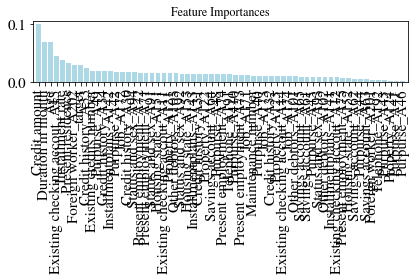
#利用sklearn的SelectFromModel，根据用户指定的阈值选择特征
from sklearn.feature_selection import SelectFromModel
select_rf = SelectFromModel(rf_base, threshold=0.015, prefit=True)
X_selected = select_rf.transform(X_train_std)
print(X_train_std.shape[1]) # 原始特征维度
print(X_selected.shape[1]) # 特征选择后特征维度
for f in range(X_selected.shape[1]):
print("%2d) %s %f" %(f+1, feat_labels[indices[f]], importances[indices[f]]))
print("所选特征数量:",X_selected.shape[1])62
17
1) Credit amount 0.099694
2) Duration in month 0.069669
3) Age 0.068704
4) Existing checking accout_A13 0.044726
5) Installment rate 0.037383
6) Present residence 0.032810
7) Foreign worker_A202 0.029428
8) target 0.029389
9) Credit history_A33 0.023620
10) Existing credits number 0.019204
11) Purpurse_A49 0.019041
12) Credit history_A34 0.018378
13) Installmentplans_A142 0.018066
14) Purpurse_A42 0.016318
15) Job_A172 0.015945
16) Credit history_A30 0.015873
17) Status and sex_A94 0.015855
所选特征数量: 17# 可视化特征选择结果，黑色的是选中的，白色的是滤过的
mask1 = select_rf.get_support()
#评估性能
#原始测试集上的性能
rf_base.fit(X_train_std,y_train)
y_train_pred = rf_base.predict(X_train_std)
y_test_pred = rf_base.predict(X_test_std)
print('随机森林在训练集上的准确率：',accuracy_score(y_train,y_train_pred))
print('随机森林在测试集上的准确率：',accuracy_score(y_test,y_test_pred))
#特征选择后的性能
rf_base.fit(X_train_std[:,mask1],y_train)
y_train_pred = rf_base.predict(X_train_std[:,mask1])
y_test_pred = rf_base.predict(X_test_std[:,mask1])
print('特征选择后随机森林在训练集上的准确率：',accuracy_score(y_train,y_train_pred))
print('特征选择后随机森林在测试集上的准确率：',accuracy_score(y_test,y_test_pred))随机森林在训练集上的准确率： 1.0
随机森林在测试集上的准确率： 0.77
特征选择后随机森林在训练集上的准确率： 1.0
特征选择后随机森林在测试集上的准确率： 0.776-PCA/LDA降维
#PCA主成分分析方法
from sklearn.decomposition import PCA
pca = PCA()
X_train_pca = pca.fit_transform(X_train_std[:,k15])
pca.explained_variance_ratio_array([0.13289936, 0.1133389 , 0.08963202, 0.0861605 , 0.08535397,
0.07832916, 0.06808131, 0.06454949, 0.06311886, 0.05496602,
0.05342284, 0.03512715, 0.03293817, 0.02445198, 0.01763028])#评估性能
#原始测试集上的性能
rf_base.fit(X_train_std,y_train)
y_train_pred = rf_base.predict(X_train_std)
y_test_pred = rf_base.predict(X_test_std)
print('随机森林在训练集上的准确率：',accuracy_score(y_train,y_train_pred))
print('随机森林在测试集上的准确率：',accuracy_score(y_test,y_test_pred))
#特征选择后的性能
rf_base.fit(X_train_std[:,k15],y_train)
y_train_pred = rf_base.predict(X_train_std[:,k15])
y_test_pred = rf_base.predict(X_test_std[:,k15])
print('SBS特征选择后随机森林在训练集上的准确率：',accuracy_score(y_train,y_train_pred))
print('SBS特征选择后随机森林在测试集上的准确率：',accuracy_score(y_test,y_test_pred))
#特征降维后的性能
#选择前n_components个主成分
pca = PCA(n_components=12)
X_train_pca = pca.fit_transform(X_train_std[:,k15])
X_test_pca = pca.transform(X_test_std[:,k15])
rf_base.fit(X_train_pca,y_train)
y_train_pred = rf_base.predict(X_train_pca)
y_test_pred = rf_base.predict(X_test_pca)
print('PCA特征降维后随机森林在训练集上的准确率：',accuracy_score(y_train,y_train_pred))
print('PCA特征降维后随机森林在测试集上的准确率：',accuracy_score(y_test,y_test_pred))随机森林在训练集上的准确率： 1.0
随机森林在测试集上的准确率： 0.77
SBS特征选择后随机森林在训练集上的准确率： 1.0
SBS特征选择后随机森林在测试集上的准确率： 0.7766666666666666
PCA特征降维后随机森林在训练集上的准确率： 1.0
PCA特征降维后随机森林在测试集上的准确率： 0.7766666666666666FIANL - 调参
## 网格搜索 基于pca数据
from sklearn.model_selection import RandomizedSearchCV
from sklearn.model_selection import GridSearchCV
forest_n = RandomForestClassifier(random_state=1)
param_dist = {'max_depth': [None], #
'n_estimators': [250], #
'max_features': [9], #
'min_samples_split':[3],
'min_samples_leaf':[1,2,3,4,5,6,7,8],
'criterion': ['gini'],
'oob_score':[True]}
## 随即搜索 n_iter 抽样参数
# np.random.seed(0)
# rs_rf = RandomizedSearchCV(estimator=forest_n,
# param_distributions=param_dist,
# n_iter=50, scoring='accuracy',
# cv=10, n_jobs=-1)
rs_rf = GridSearchCV(estimator=forest_n,
param_grid=param_dist,
scoring='accuracy',
cv=5, n_jobs=-1)
rs_rf = rs_rf.fit(X_train_pca, y_train)
print('CV accuracy:',rs_rf.best_score_)
print(rs_rf.best_params_)
clf_best = rs_rf.best_estimator_
clf_best.fit(X_train_pca, y_train)
print('Test accuracy: %.3f' % clf_best.score(X_test_pca, y_test))CV accuracy: 0.7585714285714286
{'criterion': 'gini', 'max_depth': None, 'max_features': 9, 'min_samples_leaf': 4, 'min_samples_split': 3, 'n_estimators': 250, 'oob_score': True}
Test accuracy: 0.780## 网格搜索 基于SBS特征选择数据
forest_n = RandomForestClassifier(random_state=1)
param_dist = {'max_depth': [None], #
'n_estimators': [250], #
'max_features': [3,4,5,6,7,8,9], #
'min_samples_split': [1,2,3,4,5,6,7,8],
'min_samples_leaf': [1,2,3,4,5,6,7,8],
'criterion': ['gini'],
'oob_score': [True]}
rs_rf = GridSearchCV(estimator=forest_n,
param_grid=param_dist,
scoring='accuracy',
cv=5, n_jobs=-1)
rs_rf = rs_rf.fit(X_train_std[:,k15], y_train)
print('CV accuracy:',rs_rf.best_score_)
print(rs_rf.best_params_)
clf_best = rs_rf.best_estimator_
clf_best.fit(X_train_std[:,k15], y_train)
print('Test accuracy: %.3f' % clf_best.score(X_test_std[:,k15], y_test))CV accuracy: 0.7728571428571428
{'criterion': 'gini', 'max_depth': None, 'max_features': 5, 'min_samples_leaf': 1, 'min_samples_split': 3, 'n_estimators': 250, 'oob_score': True}
Test accuracy: 0.777